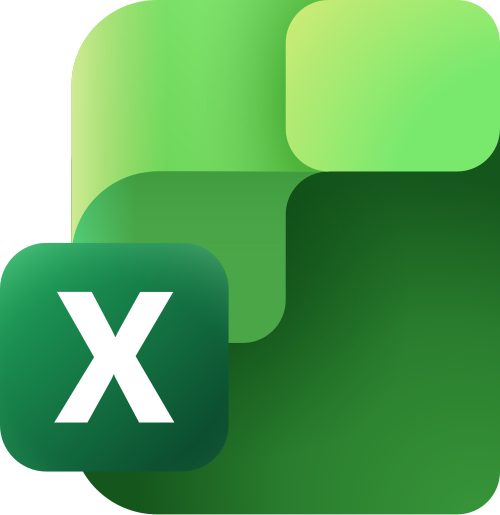
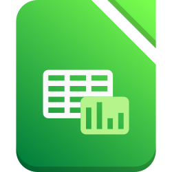
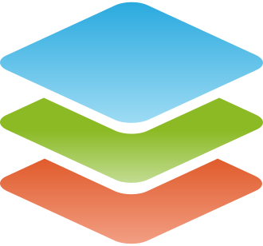

Diferentes ferramentas para criar planilhas
Para começar a criar nossas tabelas, precisamos escolher nossa ferramenta de trabalho. Hoje, o mundo da tecnologia se divide em dois caminhos principais:
- Editores em Nuvem (Online): Como o Google Planilhas e o Microsoft Excel 365. Eles funcionam no próprio navegador e salvam as alterações automaticamente. São excelentes para trabalhos em grupo, mas exigem conexão constante com a internet.
- Editores Locais (Instalados): Como o Microsoft Excel clássico, o LibreOffice Calc e o OnlyOffice. Eles funcionam em aplicação instalada no computador, sem a necessidade de conexão com a internet, mas precisam da nossa atenção para salvar todas as alterações feitas no arquivo.
Algumas dessas aplicações também estão disponíveis para celulares e tablets. Porém, saiba que elas são versões diferentes daquelas do computador, possuindo telas modificadas e funcionalidades mais limitadas.
A seguir, conhecemos um pouco mais sobre cada uma das ferramentas citadas:
Google Planilhas: É um editor online e gratuito disponível para as contas criadas na Google. A ferramenta está integrada ao Google Drive. Sua grande vantagem é o salvamento automático instantâneo, a facilidade para compartilhar o arquivo e permitir que outras pessoas editem a planilha ao mesmo tempo. Como ponto negativo, ele depende necessariamente de internet e seus recursos avançados para automações são mais limitados que as versões instaladas.

Microsoft Excel 365: É uma versão online do Microsoft Excel Desktop que funciona em qualquer navegador, desde que tenha conexão de internet. É uma ferramenta paga, cuja assinatura também inclui outras ferramentas de escritório. De forma gratuita, a Microsoft permite a visualização de arquivos e edições básicas. Como trata-se de uma versão web, algumas ferramentas avançadas não conseguem ser aplicadas.
Microsoft Excel Desktop: É o editor instalado mais famoso e utilizado no mercado profissional mundial. É uma ferramenta extremamente completa para a manipulação de planilhas do básico ao avançado, capaz de processar milhões de dados e gráficos complexos sem travamentos. O principal ponto negativo é que se trata de um software comercial pago, exigindo a compra de uma licença ou assinatura ativa.

LibreOffice Calc: É um editor de planilhas instalado no computador, totalmente gratuito e de código aberto (Software Livre). Funciona perfeitamente sem internet e consome pouca memória do computador, sendo ideal para máquinas antigas. Como desvantagem, sua interface visual tem uma aparência mais antiga, e ele pode desconfigurar pequenos detalhes visuais ao abrir arquivos criados originalmente no Excel. Em atualizações recentes é possível configurar algumas formas de visualização, mas ainda assim o visual é o menos intuitivo.

OnlyOffice: É um aplicativo gratuito disponível tanto para computadores quanto para celulares e tablets. No computador, ele se destaca por sua interface moderna em abas (muito parecida com as versões recentes do Excel) e por sua altíssima compatibilidade com arquivos do tipo .xlsx. Já nos celulares, sua tela é totalmente simplificada e adaptada para comandos de toque, possuindo recursos mais limitados que a versão de PC e possibilitando acessar arquivos de planilhas em nuvens como Google Drive, OneDrive ou Dropbox.
A conectividade no Brasil
No Brasil, a falta de conectividade estável à internet ainda afeta milhões de estudantes, principalmente nas periferias e zonas rurais. Pesquisas de órgãos como o cetic.br apontam que muitas famílias de baixa renda acessam a internet exclusivamente pelo celular, com planos de dados limitados que bloqueiam o acesso após o consumo da franquia. Para evitar a dependência da internet, é recomendado o uso de softwares instalados, como o LibreOffice ou OnlyOffice.
Caso você queira saber mais sobre como as famílias brasileiras residentes em regiões urbanas e rurais acessam às Tecnologias de Informação e Comunicação (TIC), assista ao vídeo de lançamento da pesquisa TIC Domicílios 2025 disponibilizado logo abaixo. Apesar de ser um vídeo longo, ele também nos ajuda a entender como uma pesquisa é feita e como ela pode ser apresentada à sociedade.
Se você assistiu ao vídeo, você apresentaria o assunto dele de uma maneira diferente? Qual outra informação te chamou mais atenção?
Considerando as explicações sobre as principais ferramentas de edição de planilhas eletrônicas, qual delas você gostaria de aprender?